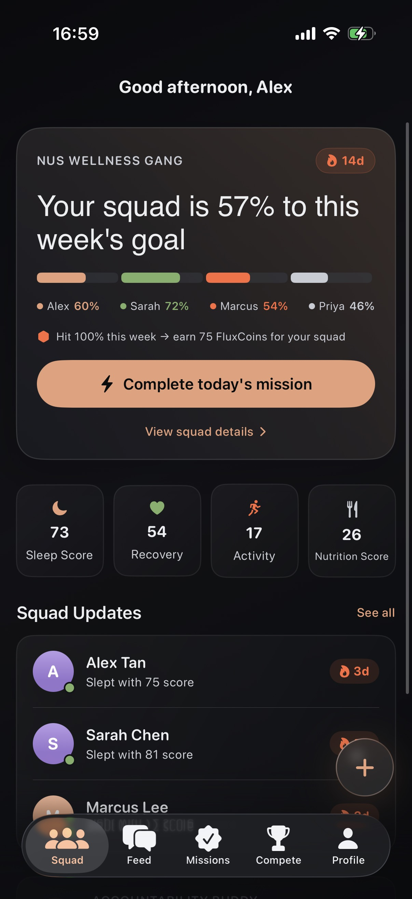
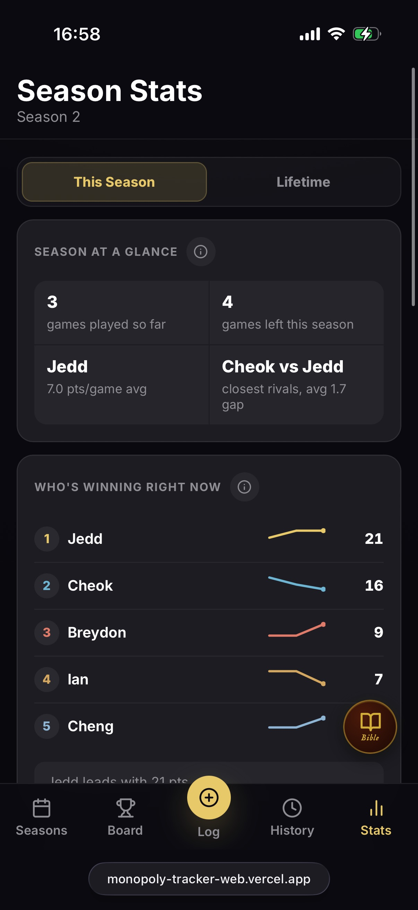
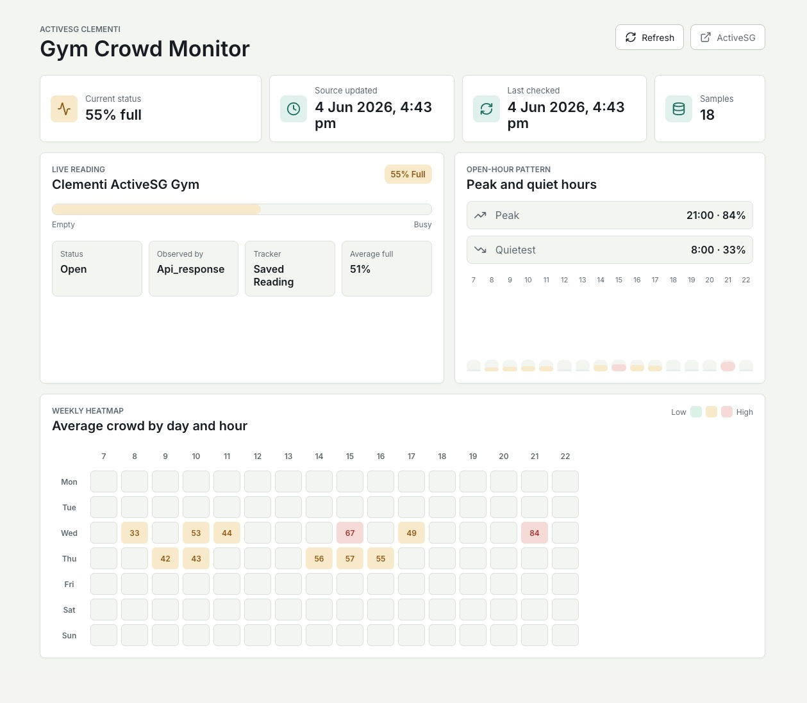
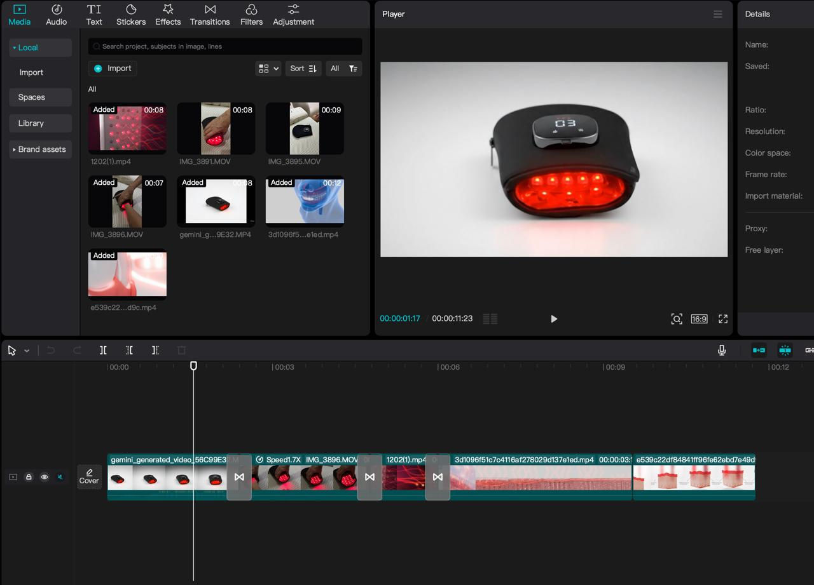
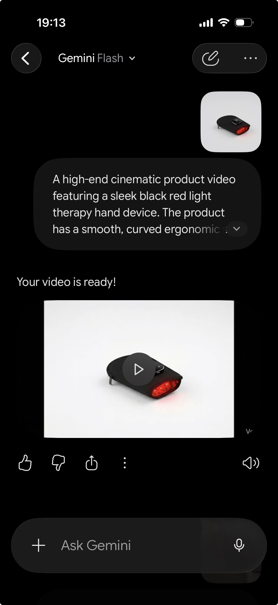

FLUX
一款以社交为核心的健康打卡应用，年轻用户可以组建小队、完成日常任务、追踪健康数据，并通过共享动态流互相激励。

我如何使用 AI
- 利用市场分析提示词梳理应用与竞品的差异化定位。
- 为 Xcode UI/UX 生成详细逻辑提示词，定义视觉规则、Apple Health 同步和功能交互。
- 构建演示幻灯片框架、商业模式及获客策略脚本。
我就读于新加坡理工学院工商管理专业，擅长将 AI 作为创意、策略与技术协作伙伴，应用在产品实验、自动化流程和数字营销项目中。
我目前就读于新加坡理工学院工商管理专业（2024 年 4 月入学，预计 2027 年 5 月毕业），在数字营销、视觉设计和现场活动制作方面拥有实战经验。我曾为新加坡青年飞行俱乐部导播一场六机位直播，也曾在 Far East Flora 直接面对客户，并持续将技术执行与商业目标连接起来。
我不只把 AI 视为快速解决问题的工具，而是把它当作一位“初级队友”，在快节奏、跨职能的环境中协助我提升产品策略、UI 编程、设计流程和演示表达。
将营销基础与现代 AI 工具链相结合。
提升内容产出效率，生成结构化演示材料，并起草策略脚本。
制作社交媒体物料、横幅、缩略图，并统筹管理直播制作环节。
不局限于孤立的输出物，而是系统化构建端到端的产品功能与用户旅程。
与 AI 智能体协作编写自动化脚本、搭建仪表盘并部署应用。
这些项目证明我能给出清晰约束，并把 AI 当作产品设计师、分析师和代码助手来协作。
一款以社交为核心的健康打卡应用，年轻用户可以组建小队、完成日常任务、追踪健康数据，并通过共享动态流互相激励。

一款全栈、移动端优先的 Web 应用，用于追踪桌游竞技赛季，包含实时排行榜、访客玩家记录、胜率统计以及自定义规则数据库。

一个结合 Python Playwright 爬虫与 React 仪表盘的自动化系统，用于绕过 Cloudflare 限制，并追踪 Clementi ActiveSG 健身房的实时与历史客流量。



CapCut 剪辑时间轴（左）· Gemini 提示词界面（右）
最终短视频广告 —— 由我兄长使用 AI 生成素材剪辑而成
我协助兄长的一件代发电商业务，使用 AI 为一款红光疗愈手持设备生成具有电影质感的产品视频。这些 AI 生成的视频片段随后作为原始创意素材，由他在 CapCut 中剪辑成最终的短视频广告。
DELTA 项目 – “Cradle of Songs”（亲子音乐互动项目）
我希望加入节奏快、重视产品思维的团队，将 AI、营销能力和动手执行力应用在真实的商业问题上。我适合清晰思考、务实实验，并重视面向用户输出质量的工作环境。